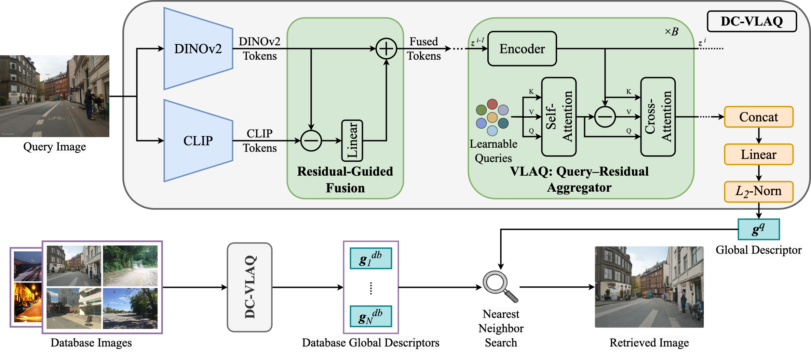
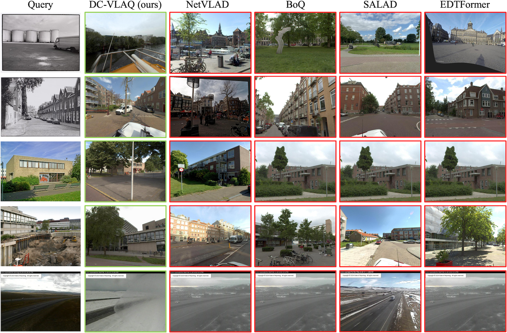
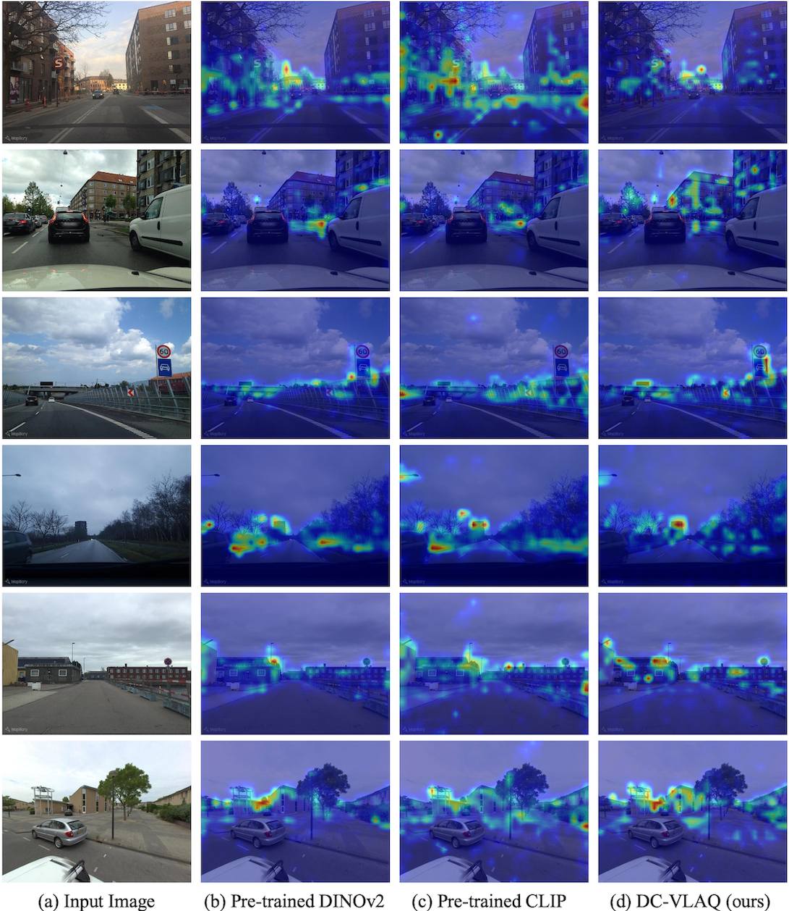

Abstract
One of the central challenges in visual place recognition (VPR) is learning a robust global representation that remains discriminative under large viewpoint changes, illumination variations, and severe domain shifts. While visual foundation models (VFMs) provide strong local features, most existing methods rely on a single model, overlooking the complementary cues offered by different VFMs. However, exploiting such complementary information inevitably alters token distributions, which challenges the stability of existing query–based global aggregation schemes. To address these challenges, we propose DC-VLAQ, a representation-centric framework that integrates the fusion of complementary VFMs and robust global aggregation. Specifically, we first introduce a lightweight residual-guided complementary fusion that anchors representations in the DINOv2 feature space while injecting complementary semantics from CLIP through a learned residual correction. In addition, we propose the Vector of Local Aggregated Queries (VLAQ), a query-residual global aggregation scheme that encodes local tokens by their residual responses to learnable queries, resulting in improved stability and the preservation of fine-grained discriminative cues. Extensive experiments on standard VPR benchmarks, including Pitts30k, Tokyo24/7, MSLS, Nordland, SPED, and AmsterTime, demonstrate that DC-VLAQ consistently outperforms strong baselines and achieves state-of-the-art performance, particularly under challenging domain shifts and long-term appearance changes.
Overview of the pipeline

An input image is first encoded by DINOv2 and CLIP to extract complementary local features. Then, a residual-guided fusion module injects semantic information from CLIP as residual corrections anchored to DINOv2 features. Finally, the fused tokens are aggregated by the proposed VLAQ aggregator to produce a compact global descriptor for nearest-neighbor place retrieval.
Qualitative comparison

DC-VLAQ consistently retrieves visually and structurally consistent matches under challenging appearance changes, whereas baseline methods often fail due to over-reliance on global appearance cues.
Visualization of query activation heatmaps
Compared to pre-trained DINOv2 and CLIP, DC-VLAQ produces more focused and spatially consistent activations on stable structural elements such as building facades, road boundaries, and static landmarks, while suppressing transient or less informative regions.

Results
Standard VPR Benchmarks
The best is highlighted in bold, and the second best is underlined. †CricaVPR uses a cross-image encoder to correlate multiple images per place and is therefore excluded from the Pitts30k comparison. ‡SALAD-CM leverages MSLS as an additional training set and is thus excluded from the MSLS comparison.
| Method | Venue & Year | Pitts30k-test | Tokyo24/7 | MSLS-val | MSLS-challenge | Nordland | ||||||||||
|---|---|---|---|---|---|---|---|---|---|---|---|---|---|---|---|---|
| R@1 | R@5 | R@10 | R@1 | R@5 | R@10 | R@1 | R@5 | R@10 | R@1 | R@5 | R@10 | R@1 | R@5 | R@10 | ||
| NetVLAD | CVPR'16 | 81.9 | 91.2 | 93.7 | 60.6 | 68.9 | 74.6 | 53.1 | 66.5 | 71.1 | 35.1 | 47.4 | 51.7 | 6.4 | 10.1 | 12.5 |
| SFRS | ECCV'20 | 89.4 | 94.7 | 95.9 | 81.0 | 88.3 | 92.4 | 69.2 | 80.3 | 83.1 | 41.6 | 52.0 | 56.3 | 16.1 | 23.9 | 28.4 |
| Patch-NetVLAD | CVPR'21 | 88.7 | 94.5 | 95.9 | 86.0 | 88.6 | 90.5 | 79.5 | 86.2 | 87.7 | 48.1 | 57.6 | 60.5 | 44.9 | 50.2 | 52.2 |
| TransVPR | CVPR'22 | 89.0 | 94.9 | 96.2 | 79.0 | 82.2 | 85.1 | 86.8 | 91.2 | 92.4 | 63.9 | 74.0 | 77.5 | 63.5 | 68.5 | 70.2 |
| CosPlace | CVPR'22 | 88.4 | 94.5 | 95.7 | 81.9 | 90.2 | 92.7 | 82.8 | 89.7 | 92.0 | 61.4 | 72.0 | 76.6 | 58.5 | 73.7 | 79.4 |
| EigenPlaces | ICCV'23 | 92.5 | 96.8 | 97.6 | 93.0 | 96.2 | 97.5 | 89.1 | 93.8 | 95.0 | 67.4 | 77.1 | 81.7 | 71.2 | 83.8 | 88.1 |
| MixVPR | WACV'23 | 91.5 | 95.5 | 96.3 | 85.1 | 91.7 | 94.3 | 88.0 | 92.7 | 94.6 | 64.0 | 75.9 | 80.6 | 76.2 | 86.9 | 90.3 |
| SelaVPR | ICLR'24 | 92.8 | 96.8 | 97.7 | 94.0 | 96.8 | 97.5 | 90.8 | 96.4 | 97.2 | 73.5 | 87.5 | 90.6 | 87.3 | 93.8 | 95.6 |
| CricaVPR† | CVPR'24 | 94.9† | 97.3† | 98.2† | 93.0 | 97.5 | 98.1 | 90.0 | 95.4 | 96.4 | 69.0 | 82.1 | 85.7 | 90.7 | 96.3 | 97.6 |
| BoQ | CVPR'24 | 93.7 | 97.1 | 97.9 | 98.1 | 98.1 | 98.7 | 93.8 | 96.8 | 97.0 | 79.0 | 90.3 | 92.0 | 90.6 | 96.0 | 97.5 |
| SALAD | CVPR'24 | 92.5 | 96.4 | 97.5 | 94.6 | 97.5 | 97.8 | 92.2 | 96.4 | 97.0 | 75.0 | 88.8 | 91.3 | 89.7 | 95.5 | 97.0 |
| SALAD-CM‡ | ECCV'24 | 92.7 | 96.8 | 97.9 | 94.6 | 97.5 | 97.8 | 94.2‡ | 97.2‡ | 97.4‡ | 82.7‡ | 91.2‡ | 92.7‡ | 90.7 | 96.6 | 97.5 |
| EDTFormer | TCSVT'25 | 93.4 | 97.0 | 97.9 | 97.1 | 98.1 | 98.4 | 92.0 | 96.6 | 97.2 | 78.4 | 89.8 | 91.9 | 88.3 | 95.3 | 97.0 |
| FoL-global | AAAI'25 | — | — | — | 96.2 | 98.7 | 98.7 | 93.1 | 96.9 | 97.4 | 78.7 | 90.8 | 93.0 | 87.8 | — | — |
| DC-VLAQ (Ours) | — | 94.3 | 97.6 | 98.3 | 98.7 | 99.7 | 99.7 | 94.2 | 97.3 | 97.6 | 81.7 | 92.2 | 94.5 | 92.8 | 97.2 | 98.2 |
Robustness-Oriented Benchmarks
The best is highlighted in bold, and the second best is underlined.
| Method | Venue & Year | SPED | AmsterTime | ||||
|---|---|---|---|---|---|---|---|
| R@1 | R@5 | R@10 | R@1 | R@5 | R@10 | ||
| NetVLAD | CVPR'16 | 78.7 | 88.3 | 91.4 | 16.3 | — | — |
| GeM | TPAMI'18 | 64.6 | 79.4 | 83.5 | — | — | — |
| CosPlace | CVPR'22 | 75.3 | 85.9 | 88.6 | 47.7 | — | — |
| EigenPlaces | ICCV'23 | 82.4 | 91.4 | 94.7 | 48.9 | — | — |
| MixVPR | WACV'23 | 85.2 | 92.1 | 94.6 | 40.2 | — | — |
| SelaVPR | ICLR'24 | 89.5 | — | — | — | — | — |
| CricaVPR | CVPR'24 | — | — | — | 64.7 | 82.8 | 87.5 |
| BoQ | CVPR'24 | 92.5 | 95.9 | 96.7 | 63.0 | 81.6 | 85.1 |
| SALAD | CVPR'24 | 92.1 | 96.2 | — | — | — | — |
| SALAD-CM | ECCV'24 | 89.3 | — | — | — | — | — |
| EDTFormer | TCSVT'25 | — | — | — | 65.2 | 85.0 | 89.0 |
| FoL-global | AAAI'25 | 92.1 | — | — | 64.6 | — | — |
| DC-VLAQ (Ours) | — | 93.9 | 97.7 | 98.2 | 66.8 | 85.6 | 88.9 |
BibTeX
@misc{zhu2026dcvlaqqueryresidualaggregationrobust,
title={DC-VLAQ: Query-Residual Aggregation for Robust Visual Place Recognition},
author={Hanyu Zhu and Zhihao Zhan and Yuhang Ming and Liang Li and Dibo Hou and Javier Civera and Wanzeng Kong},
year={2026},
eprint={2601.12729},
archivePrefix={arXiv},
primaryClass={cs.CV},
url={https://arxiv.org/abs/2601.12729},
}